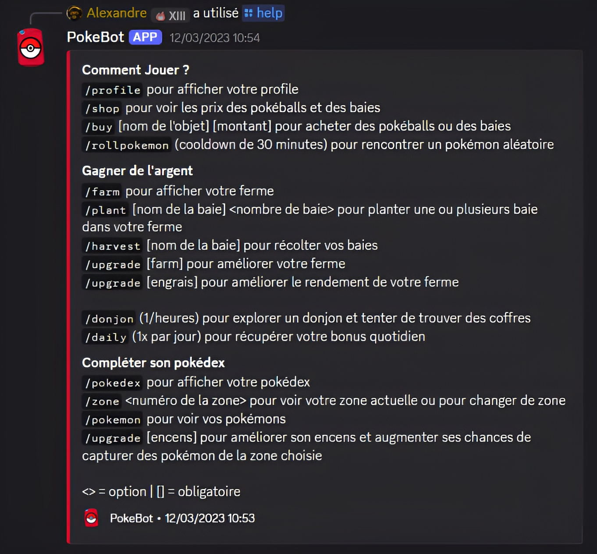
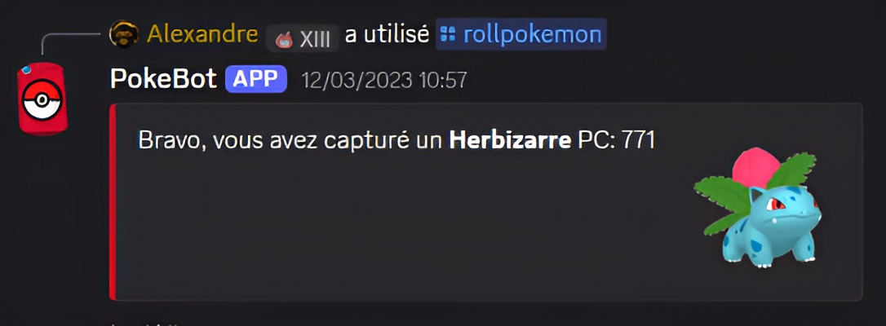
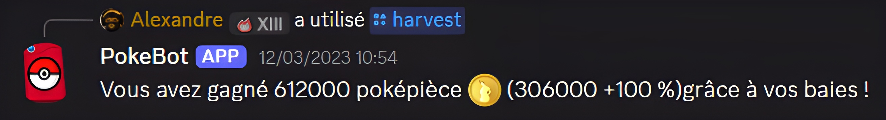

Pitch
Une progression long terme sur Discord: capturer des pokemons, faire tourner une ferme de baies, investir dans l'equipement et monter en difficulte pour viser des captures plus rares.
Mecaniques
- Capture de pokemons via commandes dediees.
- Economie persistante alimentee par la ferme de baies.
- Achat d'equipement pour augmenter les chances de capture.
- Deblocage progressif de zones plus exigeantes.
Captures de commandes


